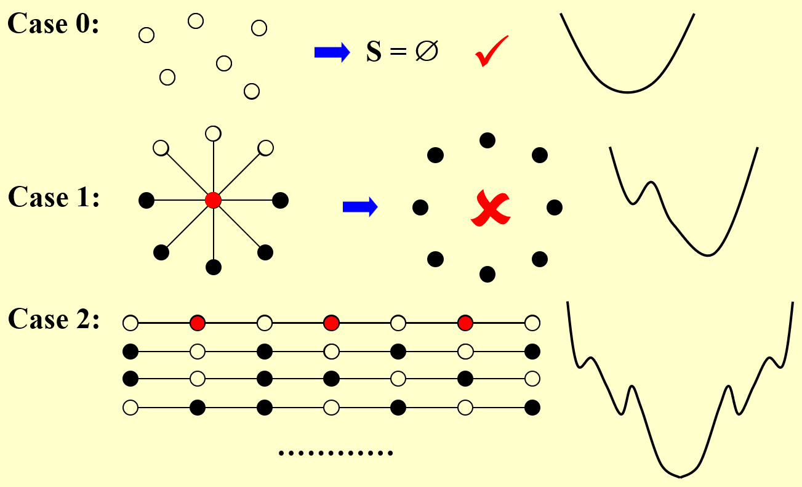
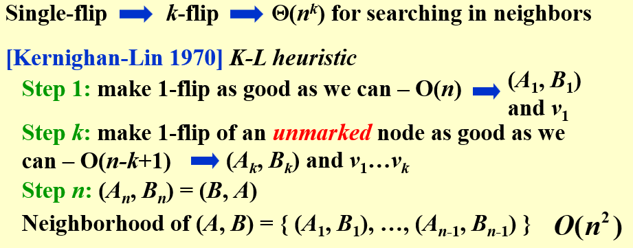

局部搜索¶
约 4643 个字 41 行代码 2 张图片 预计阅读时间 19 分钟
基本概念¶
所谓局部搜索就是在解空间中搜索一个局部最优解，但通常无法保证找到的是全局最优解。局部搜索算法的基本思想是从一个初始解出发，不断地在相邻的解（就是只需要进行改变的其他可行解）中寻找更好的解，直到满足某些停止条件为止。
局部搜索通常用于求解大规模的优化问题，尤其是那些解空间较大且不容易通过全局搜索找到最优解的问题。局部搜索的基本流程包括以下几个基本步骤：
- 初始化：从解空间中随机选择一个初始解作为当前解。
- 邻域搜索：生成当前解的邻域解，所谓邻域解就是与当前解相比只有少量改变的解。
- 选择最优邻域解：从邻域解中选择一个最优解作为当前解。
- 迭代：重复步骤 2 和 3，直到满足某些停止条件（如最大迭代次数、解的改进程度小于某个阈值等）。
局部搜索的范式¶
局部：
-
定义局部实际上就是定义邻居（neighborhood）。
假设 \(S\) 是一个可行解，\(S\) 的邻居就是一个集合 $$ N(S) = \{S' | S' \text{是} S \text{经过一个小的更改之后得到的解} \} $$
-
这里“小的更改” 需要算法设计者自己根据问题的特点定义，例如背包问题可以设置为进行一个物品的替换，旅行商问题可能是交换两个顶点的途径顺序等等
所谓的解 \(S\) 的局部也就是 \(S\) 的邻居集合 \(N(S)\)
搜索：
- 从任意一个可行解开始，不断在当前所处的解的局部（也就是邻居）中选择一个 最优解
- 直到我们无法在局部找到更优解为止
一般的局部搜索可以用下面的伪代码来描述
顶点覆盖问题¶
问题描述
给定一个无向图 \(G = (V, E)\)，顶点覆盖问题要求找到最小的一个顶点集合 \(S \subseteq V\)，使得图 \(G\) 中的每条边 \((u,v) \in E\) 至少有一个端点在 \(S\) 中。
顶点覆盖问题是一个 NP-完全问题。
在这个问题中我们定义可行解为能“覆盖”图中所有边的点集，开销为点集中顶点的数量，邻居就是把当前的解增加或减少一个顶点所构成的解。
梯度下降法¶
如果我们直接把梯度下降法套用到这个问题中，很难得到一个比较好的结果
Example

- case 0 中的图没有任何边，梯度下降法最后得到的是空集，满足定点覆盖的条件
- case 1 可以看出来，假如我们通过梯度下降法删去的点是边缘的点，那没有什么问题；但是假如我们删去的是中心的顶点，就会发现此时就再也无法删去任何一个顶点了，这虽然是一个局部最优，但显然和全局最优解相差甚远
从上面这个例子我们可以得出局部搜索与近似算法的一个很重要的区别，即局部搜索得到的解可能是没有任何近似比保证的——局部搜索只是一种启发式的算法。
Metropolis 算法与模拟退火¶
Info
这种改进的方法由 Metropolis，Rosenbluth 和 Teller 于 1953 年提出，被称为 Metropolis 算法。他们希望利用统计力学中的原理模拟物理系统的行为。在统计物理中有一个假设，当一个系统的能量为 \(E\) 时，它出现的概率为 \(e^{−E/kT}\)，其中 \(T>0\) 是温度，\(k\) 是玻尔兹曼常数。这个假设被称为 Boltzmann 分布。
显然的，当 \(T\) 固定时，能量越低的状态出现的概率越大，因此一个物理系统也有更大的概率处于能量低的状态。然后我们考虑温度 \(T\) 的影响，当 \(T\) 很大时，根据指数函数的特点，不同能量对应的概率其实差别可能不是很大；但 \(T\) 较低的时候，不同的能量对应的概率差别就会很大。
基于玻尔兹曼分布，我们可以将Metropolis 算法描述如下：
- 初始化：随机选择一个可行解 \(S\)，设 \(S\) 的能量为 \(E(S)\)，并确定一个温度T；
-
不断进行如下步骤：
- 随机选择 \(S\) 的一个邻居 \(S'\)（可以按均匀分布随机选择）；
- 如果 \(E(S') \leqslant E(S)\)，则接受 \(S'\) 作为新的解；
- 如果 \(E(S') > E(S)\)，则以概率 \(e^{-\frac{E(S')-E(S)}{kT}}\) 接受 \(S'\) 作为新的解；如果接受了则更新解，继续下一轮迭代，否则保持原解 \(S\)，继续迭代。
直观地说，Metropolis 算法就是在当前解 \(S\) 的邻居中随机选择一个解 \(S'\)，如果 \(S'\) 的能量更低则接受，否则以一定概率接受一个更差的解——这就使得我们有可能跳出一个局部最优解，有机会能够在更大的解空间中找到一个更好的解。
当然有一个值得注意的问题是，我们上面没有写算法的停止点，实际上进行到一个满意的结果中断算法即可。
在Metropolis 算法中一个重要参数是温度 \(T\)：当温度很高的时候，不同能量对应的概率差别不大，因此高温非常适合于跳出局部最优解；而 当温度很低的时候，不同能量对应的概率差别很大，这时候我们就有更大的概率进入好的解。
因此我们希望在开始的时候温度很高，这样我们就能在开始的时候跳到一个比较好的局部，然后逐渐降温，这样温度很低的时候我们就能在这个比较好的局部内找到一个比较好的解。
Hopfield 神经网络¶
吴一航学长的ADS讲义
Hopfield 神经网络是一种全连接的反馈神经网络，于 1982 年由 J.Hopfield 教授提出。Hopfield 神经网络有一个能量函数，如果能将能量函数与一个优化问题绑定，那么 Hopfield 神经网络就可以用来解决这个优化问题，例如旅行商问题。
我们主要讨论 Hopfield 神经网络的稳定构型（stable configurations）
Definition
-
Hopfield 神经网络可以抽象为一个无向图 \(G = (V, E)\)，其中 \(V\) 是神经元的集合，\(E\) 是神经元之间的连接关系，并且每条边 \(e\) 都有一个权重 \(w_e\)，这可能是正数或负数：
-
Hopfield 神经网络的一个构型 (configuration) 是指网络中每个神经元 (即图的顶点) 的状态的一个取值，赋值可能为 1 或 -1。我们记顶点 \(u\) 的状态为 \(s_u\)。
-
如果对于边 \(e=(u,v)\) 有 \(w_e>0\)，则我们希望 \(u\) 和 \(v\) 具有相反的状态；如果 \(w_e<0\)，则我们希望 \(u\) 和 \(v\) 具有相同的状态；综合而言，我们希望 $$ w_e s_u s_v < 0 $$
-
我们将满足上述条件的边 \(e\) 称为“好”的 (good)，否则称为“坏”的 (bad)。
-
我们称一个点 \(u\) 是“满意的” (satisfied)，当且仅当它所连接的所有点中，好边的权重绝对值大于等于坏边的，即
反之，如果 \(u\) 不满足这一条件，我们称其为“不满意的” (unsatisfied)。
6.最后，我们称一个构型是“稳定的（stable）”，当且仅当所有的点都是满意的
如果要设计一个局部搜索算法，我们有一个非常简单直接的方式。我们可以定义一个构型的邻居就是将其中一个点的状态取反得到的新构型，然后我们就可以设计一个局部搜索算法了：
- 我们从一个随机初始构型开始，然后检查每个点是否满意，如果有不满意的点，我们就翻转这个点的状态（那么这个点自然就变得满意了），然后继续检查，直到所有的点都满意为止
- 如果这个算法会停止，那么停止的时候我们得到的就是一个稳定构型，因为这时候所有点都满意了
我们称这个算法为状态翻转算法（state-flipping algorithm）
这个算法一定会停止吗？
先给出结论：State_flipping 算法最多翻转 \(\sum_{e \in E}|w_e|\) 次后会停止。
为了首先定义一个势能函数 \(\Phi\)，它输入一个构型 \(S\)，返回这个构型下所有好边的权重绝对值的和，即 $$ \Phi(S) = \sum_{e \in good} |w_e| $$ 显然对于任意的构型 \(S\)，\(\Phi(S) \geqslant 0\)，且最大值就是所有边权重绝对值之和，即 \(\Phi(S) \leqslant \sum_{e \in E}|w_e|\)。
假设当前状态为 \(S\),有一个不满意的点 \(u\)，我们将 \(u\) 翻转后的状态为 \(S'\)，那么 $$ \Phi(S') - \Phi(S) = \sum_{e=(u,v),e \in bad} |w_e| - \sum_{e=(u,v),e \in good} |w_e| > 0 $$ 这是因为翻转后原先与 \(u\) 相连的好边都变成了坏边，坏边都变成了好边，其余边没有变化。又因为 \(u\) 是不满意的，因此与 \(u\) 相连的坏边比好边权重绝对值之和大，所以上式大于 0
又因为势能函数只能取整数值，所以 \(\Phi(S') \geqslant \Phi(S)+1\)，这就意味着我们每次翻转一个不满意的点，势能函数就会增加至少 1。因为势能函数的取值范围是有限的（0 到所有边权重绝对值之和），所以我们的局部搜索算法一定会停止，并且至多翻转 \(\sum_{e \in E}|w_e|\) 次。
很自然地，我们还可以得到如下推论：
- 设 \(S\) 是一个构型，如果 \(\Phi(S)\) 是局部最大值，则 \(S\) 是一个稳定构型
证明：如果 \(S\) 不是一个稳定构型，那么至少有一个点是不满意的，我们可以翻转这个点，势能函数会增加至少 1，这就意味着 \(\Phi(S)\) 不是局部最大值，这与 \(\Phi(S)\) 是局部最大值矛盾。
最大割问题¶
最大割问题也是一个经典的 NP 困难问题。
问题描述
给定边权全为正的一个无向图 \(G = (V, E)\)，最大割问题要求把顶点集合 \(V\) 分成两个部分 \(A\) 和 \(B\)（此时的解记为 \((A,B)\)），使得图中的边 \((u,v)\) 的权重之和最大，其中 \(u \in A\)，\(v \in B\)，即割边的权重和最大。
也就是说我们要最大化 $$ w(A,B) = \sum_{\substack{(u,v) \in E,\\u \in A, v \in B}} w_{uv} $$
局部搜索算法¶
最大割与 hopfield 神经网络问题的联系
我们可以很自然地注意到，假如我们把 \(A\) 中的所有点赋值为 1，\(B\) 中的所有点赋值为 -1，并且注意到所有边的权重都是正数，因此这时候割边就对应于 hopfield 神经网络问题中的好边、集合 \(A\) 和 \(B\) 内部的边就对应于坏边，于是我们就发现最大割问题转换为了一个 hopfield 神经网络问题。
因此我们可以对问题进行如下的定义：
- 目标：最大化函数 \(\Phi(S) = \sum_{e \in good} |w_e|\)
- 可行解：对于顶点集的任意一个划分 \((A,B)\)
- 邻居 \(S'\)：将可行解 \(S\) 中的一个点从 \(A\) 移动到 \(B\) 或者从 \(B\) 移动到 \(A\) 后得到的新解
现在我们想要关心的是，假如我们也使用 State_flipping 算法来对最大割问题求局部最优解，我们得到的解的质量如何？首先给出结论
State_flipping 算法求解最大割问题
设 \((A,B)\) 是使用 State_flipping 算法求解最大割问题得到的一个局部最优解，\((A^*, B^*)\) 是最优解，则
Proof
记图 \(G\) 中所有边的权重之和为 \(W = \sum\limits_{(u,v) \in E} w_{uv}\)。因为 \((A,B)\) 是一个局部最优解，对于 \(u \in A\)，如果把 \(u\) 从 \(A\) 移动到 \(B\) 中会使得割边的权重和降低，即移动后 $$ \sum_{v \in A} w_{uv} \leqslant \sum_{v \in B} w_{uv} $$ 这是因为移动后 \(\sum\limits_{v \in A} w_{uv}\) 会增加，并且 \(\sum\limits_{v \in B} w_{uv}\) 会减少，即 \(u\) 好边的权重减小，坏边的权重增加。
我们对所有的 \(u \in A\) 都有上述不等式，因此将这些不等式求和就得到 $$ \sum_{u \in A} \sum_{v \in A} w_{uv} \leqslant \sum_{u \in A} \sum_{v \in B} w_{uv} $$ 显然等式左边就是集合 \(A\) 内部边的权重之和的 2 倍，因为每条边都被计算了两次；等式右边就是所有割边的权重之和，于是 $$ 2 \sum_{(u,v) \in A} w_{uv} = \sum_{u \in A} \sum_{v \in A} w_{uv} \leqslant \sum_{u \in A} \sum_{v \in B} w_{uv} = w(A,B) $$ 对称地，对于 \(u \in B\)，我们有 $$ 2 \sum_{(u,v) \in B} w_{uv} \leqslant w(A,B) $$ 同时我们又知道所有边的权重之和等于两个集合内部边权重之和加上割边的权重之和，即 $$ W = \sum_{(u,v) \in A} w_{uv} + \sum_{(u,v) \in B} w_{uv} + w(A,B) $$ 并且最大割的权重不可能超过 \(W\)，因此我们有
证毕
但是上面这一个局部搜索算法不一定能在多项式时间内解决，于是我们要想办法控制迭代地次数，也就是说我们要求算法在找不到一个能对解有 “比较大的提升” 的时候就停止，即使当时的解不是局部最优解：
- 当我们处于解 \(w(A,B)\) 时，我们要求下一个解的权重至少要增大 \(\dfrac{2\varepsilon}{n}w(A,B)\) ，其中 \(n\) 是图 \(G\) 的顶点数。
对于上面这一个算法，我们有如下结论：
定理
设 \((A,B)\) 是上述算法给出的解，\((A^*,B^*)\) 是最优解，则
并且这一算法会在 \(O(\dfrac{n}{\varepsilon} \log W)\) 次状态翻转后停止，其中 \(W\) 是所有边的权重之和
Proof
这一定理的证明类似于上一个定理的证明。
我们先证明近似比为 \(2+\varepsilon\)。当我们处于算法的结束状态时，我们的解 \((A,B)\) 应当满足，对于任意的 \(u \in A\)，我们有 $$ \sum_{v \in A} w_{uv} \leqslant \sum_{v \in B} w_{uv} + \dfrac{2\varepsilon}{n}w(A,B) $$ 于是
同理，对于 \(u \in B\)，我们有 $$ 2 \sum_{(u,v) \in B} w_{uv} \leqslant (1+|B| \dfrac{2\varepsilon}{n}) w(A,B) $$ 并且我们还知道最优解的割边权重不可能超过 \(W\)，
注意到 \(|A| + |B| = n\)，于是我们有
即 $$ \dfrac{w(A,B)}{w(A ^ *, B ^ * )} \geqslant \dfrac{1}{2+\varepsilon} $$
接下来证明时间复杂度的结论。
因为我们每次状态翻转都会使得割边权重之和变为原来的 \(1+\dfrac{2\varepsilon}{n}\) 倍，由于 \(x \geqslant 1\) 时，\((1+\dfrac{1}{x})^x \geqslant 2\)，所以有 $$ (1+\dfrac{2\varepsilon}{n})^{\dfrac{n}{2\varepsilon}} \geqslant 2 $$
所以目标函数 \(\Phi\) 变为原先的 2 倍需要的翻转次数至多为 \(\dfrac{n}{2\varepsilon}\) 次，所以在 \(O(\dfrac{n}{2\varepsilon} \log W) = O(\dfrac{n}{\varepsilon} \log W)\) 次状态翻转后能增加 \(W\) 倍（这也是目标函数从最低值 1 翻转到最大值 \(W\) 所需的最大倍数），因此时间复杂度的结论得证。
更优的邻居关系¶
事实上，在最开始引入局部搜索的时候我们就提到，局部搜索有两个关键点，第一是选取好的邻居关系，第二是每一步找到一个好的邻居继续我们的搜索。在 Metropolis 算法和模拟退火中我们特别讨论了后者（特别针对于顶点覆盖问题），现在我们需要仔细讨论前者（特别针对最大割问题）
我们选取邻居关系时应当注意以下两点：
- 每个解的邻居数目不应该太少，否则我们很容易在短短几步之内就陷入一个不佳的局部最优解；
- 每个解的邻居数目不应该太多，否则我们的搜索空间太大，我们很难在短时间内找到一个好的邻居——考虑极端情况，如果每个解的邻居数目是所有可能的解，那么我们就退化成了穷举搜索。
我们考虑最大割问题，一个非常简单的想法就是，原先我们的邻居关系是把一个点从一个集合换到另一个集合，我们可以考虑把 \(k\) 个点从一个集合换到另一个集合，这样我们就有了一个 \(k\)-flip 的邻居关系。一个显然的关系是，\((A,B)\) 和 \((A',B')\) 是 \(k\)-flip 邻居，那么必然也是 \(k'\)-flip 邻居，其中 \(k'>k\)。因此如果 \((A,B)\) 是 \(k'\)-flip 邻居关系下的局部最优解，那么它也是 \(k\)-flip邻居关系下的局部最优解（其中 \(k'>k\)）。这样我们就可以通过不断增大 \(k\) 来在每次翻转时找到一个更好的邻居关系，最后得到的解的近似比可能会更低。

然而，当 \(k\) 增大时，每一步翻转找到一个更好的邻居的时间复杂度也会增大——因为我们的搜索空间将是 \(\Theta(n^k)\) 的，在 \(k\) 稍微增大一些时这一复杂度就是不可接受的了
新的邻居关系
Kernighan 和 Lin（1970）提出了一种定义邻居关系的方式，它通过如下算法得到 \((A,B)\) 的邻居集合：
- 第一步，我们选取一个点进行翻转，我们要求选取的这个点是让翻转后结果的割边权重和最大的那个点（即使有可能最大的权重也会比现有权重低），我们标记这个被翻转的点，令翻转后的解为 \((A_1,B_1)\)
- 之后第 \(k(k >1)\) 步时，我们有前一步得到的结果 \((A_{k−1},B_{k−1})\)，以及有 \(k−1\) 个已经被标记的点。然后我们选择一个没有被标记的点进行翻转，我们要求选取的这个点是让翻转后结果的割边权重和最大的那个点（即使有可能最大的权重会比现有权重低，我们也一定要翻转），我们标记这个被翻转的点，令翻转后的解为 \((A_k,B_k)\)
- \(n\) 步之后所有点都被标记了，也就是说所有的点都恰好被翻转了一次，因此实际上就有 \((A_n,B_n)= (B,A)\)，这本质上与 \((A,B)\) 并无区别。因此上述过程（我们称为 K-L 启发式算法）得到了 \(n−1\) 个邻居，即 \((A_1,B_1),(A_2,B_2),··· ,(A_{n−1},B_{n−1})\)。因此 \((A,B)\) 是一个局部最优解当且仅当对于任意的 \(1 \leqslant i \leqslant n−1\)，我们有 \(w(A,B) \geqslant w(A_i,B_i)\)。
我们简单分析即可发现上述寻找邻居的过程是一个 \(O(n^2)\) 的过程，因此相比于简单的进行 \(k\) 比较大的 \(k\)-flip 的邻居关系，K-L 启发式算法的时间复杂度是可以接受的。总而言之，K-L 启发式算法给出的邻居比较好地权衡了算法效率和结果准确性。